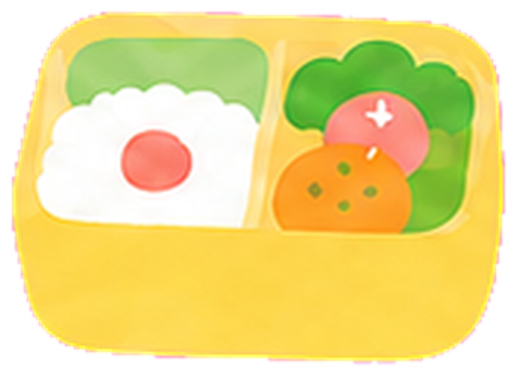

キャリア理論家とピクニックランチ
今日は、だれと
ランチする？
草原には、キャリアの先生たちが遊びに来ています。
一緒にピクニックしたい理論家か、学びたい理論を選んでね。

🍱＝お弁当のお話ができている先生。ほかの先生のお話も、これからひとりずつ増えていくよ。
スーパー
キャリア発達理論
やあ。長い旅の途中に、ようこそ。
🍱 お弁当のお話を読む →
ロジャーズ
カウンセリング理論(来談者中心療法)
……うん、うん。今日は、どんな気持ちかな。
図鑑で会う →(お話は準備中)
クランボルツ
社会的学習理論・計画された偶発性
おっと、いいところに来たね。偶然って、ごちそうだよ。
🍱 お弁当のお話を読む →
シャイン
組織心理学・キャリア・アンカー
きみが手放せないもの、いっしょに探そうか。
図鑑で会う →(お話は準備中)
バンデューラ
社会的学習理論
よく見てごらん。人はね、見て学ぶんだ。
図鑑で会う →(お話は準備中)
ホランド
職業選択理論(RIASEC)
やあ！ さっそくだけど——きみは、どのタイプかな？
🍱 お弁当のお話を読む →
シュロスバーグ
転機(トランジション)の理論
転機が来たのかい？ まず、いっしょに点検してみよう。
図鑑で会う →(お話は準備中)
サビカス
キャリア構築理論
ようこそ。あなたの物語を、聞かせてくれるかな。
図鑑で会う →(お話は準備中)
ジェラット
意思決定理論
決められない？ ……それ、悪くないんだよ。
図鑑で会う →(お話は準備中)
パーソンズ
特性因子理論(職業指導の父)
はじめまして。きみに合う仕事を、いっしょに探そう。
図鑑で会う →(お話は準備中)
エリクソン
心理社会的発達理論
人はね、一生かけて育つんだよ。
図鑑で会う →(お話は準備中)
レビンソン
成人発達理論(人生の四季)
人生にも、季節の変わり目があるんだ。
図鑑で会う →(お話は準備中)
ホール
キャリア理論(プロティアン・キャリア)
変わることを、怖がらなくていい。
図鑑で会う →(お話は準備中)
ブリッジス
転機(トランジション)の理論
何かが終わったんだね。……なら、始まりも近いよ。
図鑑で会う →(お話は準備中)
アイビイ
マイクロカウンセリング
技法はね、一段ずつ積み上げるんだ。
図鑑で会う →(お話は準備中)
國分康孝
カウンセリング(折衷主義・コーヒーカップ・モデル)
まあまあ、お茶でも飲みながら話そうか。
図鑑で会う →(お話は準備中)
エリス
論理療法(REBT)
その考え、ほんとうかな？ ——さあ、たしかめよう！
図鑑で会う →(お話は準備中)
ハンセン
統合的人生設計(ILP)
人生は、一枚のキルトなんですよ。
図鑑で会う →(お話は準備中)
ギンズバーグ
職業発達理論(先駆)
はじめは夢から。それで、いいんだよ。
図鑑で会う →(お話は準備中)
ロー
早期決定論(欲求理論)
その仕事をえらんだ根っこは、案外むかしにあるんだよ。
図鑑で会う →(お話は準備中)
ウィリアムソン
特性因子カウンセリング
まず、きみのことを整理してみようか。
図鑑で会う →(お話は準備中)
ゴットフレッドソン
限界と妥協の理論
あきらめた夢の話も、大事な手がかりだよ。
図鑑で会う →(お話は準備中)
ティードマン
意思決定理論
迷っているのは、自分がふえている途中なんだ。
図鑑で会う →(お話は準備中)
ヒルトン
意思決定理論(認知的不協和)
心のつじつま、いっしょに合わせにいこうか。
図鑑で会う →(お話は準備中)
ハヴィガースト
発達課題
その年ごろには、その年ごろの宿題があるんだよ。
図鑑で会う →(お話は準備中)
ニコルソン
トランジション・サイクル
新しい場所には、慣れる順番があるんだ。
図鑑で会う →(お話は準備中)
ユング
分析心理学
きみの人生の時計は、いま何時ごろかな。
図鑑で会う →(お話は準備中)
フロイト
精神分析
ゆっくり横になって、思いつくまま話してごらん。
図鑑で会う →(お話は準備中)
アドラー
個人心理学
その劣等感、力に変えられるよ。
図鑑で会う →(お話は準備中)
マズロー
人間性心理学(欲求階層説)
まず聞かせて。今日、ちゃんと眠れているかい？
図鑑で会う →(お話は準備中)
ハーズバーグ
動機づけ・衛生理論
お給料と、やりがい。実はね、別ものなんだ。
図鑑で会う →(お話は準備中)
マクレガー
X理論・Y理論
人をどう見るかで、育ち方が変わるんだよ。
図鑑で会う →(お話は準備中)
ヴルーム
期待理論
それ、できそうかい？ そして、ほしい未来かい？
図鑑で会う →(お話は準備中)
デシ
内発的動機づけ(自己決定理論)
ごほうびがなくても、やりたいこと——ある？
図鑑で会う →(お話は準備中)
スキナー
行動主義(オペラント条件づけ)
ほめられた行動は、くり返されるんだ。
図鑑で会う →(お話は準備中)
ウォルピ
行動療法(系統的脱感作法)
こわいものには、少しずつ近づけばいいんだよ。
図鑑で会う →(お話は準備中)
パールズ
ゲシュタルト療法
いま、ここで——何を感じているんだい？
図鑑で会う →(お話は準備中)
バーン
交流分析(TA)
きみの中にはね、3人のきみがいるんだよ。
図鑑で会う →(お話は準備中)
ベック
認知療法
その考え、事実かな？ それとも思い込みかな？
図鑑で会う →(お話は準備中)
グラッサー
現実療法(選択理論)
その行動、自分でえらべるとしたら——どうする？
図鑑で会う →(お話は準備中)
ジェンドリン
フォーカシング
言葉になる前の、その感じ……大切にしよう。
図鑑で会う →(お話は準備中)
カーカフ
ヘルピング
話す、わかる、動く。順番に、ね。
図鑑で会う →(お話は準備中)
ド・シャザーとバーグ
解決志向アプローチ
もし今夜、奇跡が起きたら——朝、何で気づく？
図鑑で会う →(お話は準備中)
その言葉の先生は、今日はまだ草原に来ていないみたい。別の言い方でもさがしてみてね。
先生たちの声掛けや話し方は、学説と人物像にもとづく創作(演出)です。試験で使う正式な表現は、各用語の「試験のことば」で確認してね。